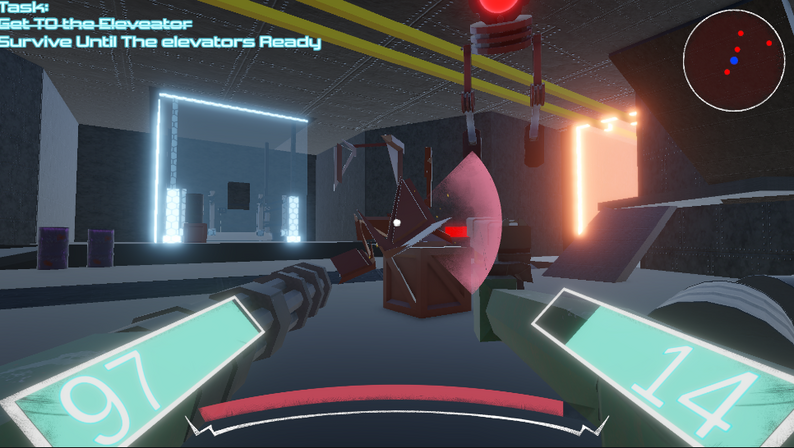
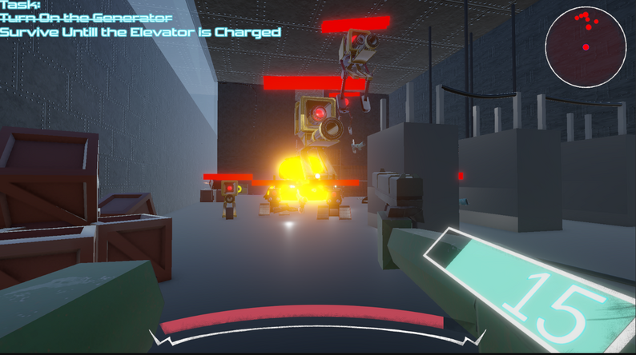
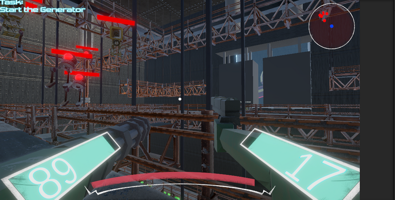

Created During SAU game fall jam 2025,
You are a damaged cyborg trapped inside a weapons factory that was once
responsible for building machines like you. Fight your way through, Scavenging the old equipment as disposable weapons



Created A custom Collision Resolution system for Movemnt